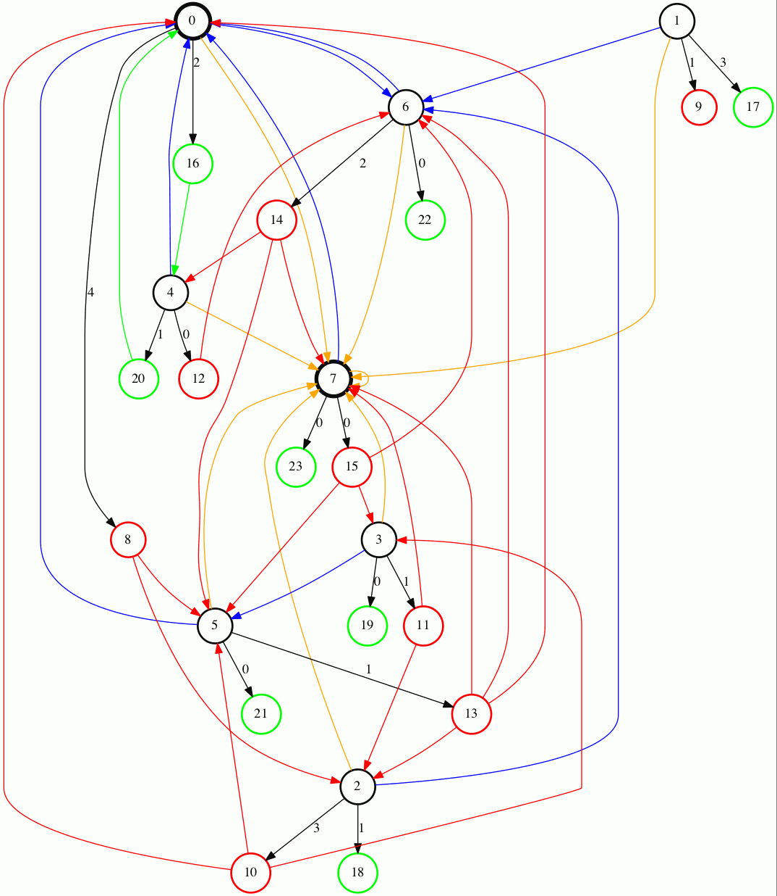
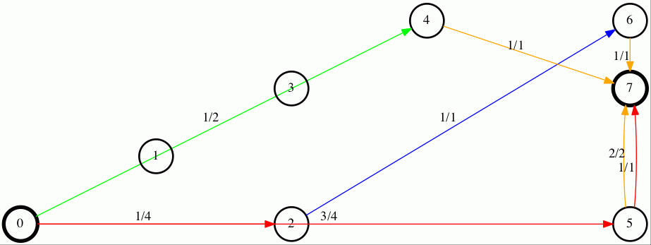

The Playground – My Solution
Table of Contents
This is an informal description of my solution to an internal programming competition in my algorithms and data structures course. The competition has ended, but at the time of writing winners have not been announced. I hold second place based on test cases behind an implementation in Python, so this can't be optimal, but not that bad either.
The code is a single file and should built easily with both GCC and Clang, I use the following with varying degrees of optimization:
clang -g -O2 -Weverything -std=c11 playground.c -o playground
1 The Problem
The original problem statement is available online, I will describe the problem here as well.
The program is given a list of platforms on standard input. I will use the input in listing 1 as a running example.
8 0 1 4 0 2 0 2 2 1 2 3 4 4 1 3 1 1 0 4 3 1 0 0 1 6 4 0 0 1 1 9 1 1 0 0 2 9 4 2 0 0 1 9 3 0 0 0 0
The first line is the number of platforms, P, the next P lines are the platforms specified by six parameters: x- and y-coordinate and four capacities. The platforms are implicitly numbered by their position in the input and their positions are distinct. We're given at least two platforms and at most 100.000. Both coordinates and capacities are between 0 and 100.000. The input is illustrated in figure 1.
Figure 1: Visualisation of the sample input
Now the thing is that we need to turn this set of platforms into a playground, where you enter at platform 0 and leave from platform P-1. To do this we will build activities from one platform to another. There are four kinds of activities, and the four capacities specify how many of each of these can be build from a specific platform. A trail is a path via a unique set of activities from the start-platform to the end-platform and the task is to maximize the number of trails. The only output produced is the maximum number of trails; we don't need to print how activities are placed etc.
The four different activities are (taken almost verbatim from the problem description):
- NEWS1 Slide (A1, red)
- Can be built from a platform A to any other platform with the same x- or y-coordinate as A. That is, any platform on the same horizontal or vertical line as A.
- Human Cannon (A2, blue)
- Can be built from a platform A to the platform furthest away from A in euclidean distance. In case of a tie, the platform that appeared first in the input wins.
- Platform Trampoline (A3, green)
- Can be built from a platform A to a platform B if there are at least 2 platforms on the line segment between A and B.
- EOF2 Wormhole (A4, orange)
- Can be built from any platform directly to the end-platform.
These are illustrated (without capacities) one by one on figures 2, 3, 4, 5 and together on figure 6.

Figure 2: A1s (same horisontal or vertical line)
Figure 3: A2s (furthest away)
Figure 4: A3s (2 or more platforms in-between)
Figure 5: A4s (end of fun)
Figure 6: All possible activities for the sample input
2 Modeling the Problem
We are going to solve this a maximum flow problem, and I'll assume the reader is familiar with these.
If one can follow activities from the start-platform to the end-platform then this corresponds to flow from the source to the sink of the corresponding flow network. The maximum flow through this network will be the maximum number of trails. Actually figure 6 is exactly this flow network for the sample input, so the correspondence is very direct.
The problem with the graph in figure 6 is that it has vertex capacities instead of edge capacities that an off-the-shelf maximum flow algorithm expects. So we need to transform the graph a bit before we can use it.
The technique for converting vertex capacities into edge capacities is well known. The trick is to insert a dummy vertex as in figure 7.

Figure 7: Converting a vertex capacity into an edge capacity
Any incoming edges will still go to the original vertex, but any outgoing will start at the new vertex instead. Now to get from the old vertex to the new vertex, the flow must cross an edge with the capacity of the old vertex. This is equivalent to the vertex having the capacity.
So it's easy to convert a graph where vertices have a single capacity to one with edge capacities instead, but our graph has four vertex capacities. It turns out that we can just insert four dummy vertices instead of one and it works. Our platforms from figure 1 now look like in figure 8. Notice how the original capacities can now be read off the edges instead of the vertices.
Figure 8: Our sample platforms with edge capacities
The vertex numbering scheme is as follows: For a platform i, the four new vertices are named i+x⋅ P where Ax is the matching activity and P still the total number of platforms. So any A1 activities from the start-platform (i=0) in our example will now go from platform 0+1⋅ 8=8 instead. Notice that this is colored red in figure 8 as expected .
The final graph which we can run a standard flow algorithm on is given in figure 9. The original vertices are black, as are their edges to the new vertices. The new vertices are colored by the activity whose capacity they match. Compare this to one of the first four graphs: All edges are still there, they just start at one of the new nodes, but still go to an original node.

Figure 9: The final flow network
I'm using Edmonds-Karp to find the actual maximum flow, a possible solution with maximum flow 5 can be seen on figure 10. This doesn't use A2-activities at all, but is the one my implementation finds. One trail consists of going from 0 to 4 with an A3-activity, of which 2 can be built from 0, and then from 4 to 7 with an A4-activity. Another trail uses A1-activities to go from 0 to 1 to 7, and so on.

Figure 10: One solution to the sample input
3 Setting up the Graph
Now we know how to model the problem as something we can solve with an off-the-shelf algorithm, so we just need to set up this flow network efficiently.
I'll start with the most interesting activity, A3, as this will dictate how much effort we spend on the rest. I will describe constructing an activity between two platforms, so just remember that this actually means from the proper dummy vertex of the first platform, to the other platform as described in the previous section.
3.1 Platform Trampoline (A3, green)
The algorithm for constructing these activities is actually quite simple, but it took me a while to figure it out. A partial run is animated on figure 11.
What we want to do is consider each platform in order. Then when considering a platform, we want to consider a different one and as efficiently as possible, determine whether it is legal to make an A3-activity between the two.
The trick is to look at the platforms, not in the order they're given, but from left to right, and from the bottom up. And furthermore to only look at platforms to the right and up, when already considering one. This guarantees that we look at platforms on the same line in order by their distance. That is, when multiple platforms lie on the same line given an origin, we will see the closest one first, then the second-closest etc.
The algorithm then becomes
- Sort the platforms by x- then y-coordinate (left to right, bottom up)
- Initialize an empty hashtable
- For each platform p
- For each platform q ahead of p in the sorted order
- Calculate the slope between p and q
- Look up the slope in our hash table
- If the value associated with the slope is 2 (or more), draw an A3-activity from p to q and from q to p
- Otherwise, increase the count
- Clear the hash table
- For each platform q ahead of p in the sorted order
We have to draw the activity in both directions because we only look ahead in the sorted order.
Looking at figure 11, the count associated with each slope is noted next to its blue line. Platforms are marked red when visited but no activity is built and green when one is. We see that the only platform to which an A3-activity can be built from 0 is number 4 as expected.
Figure 11: Partial run of algorithm for determining valid A3-activities
With expected constant time lookup in the hash table, the above runs in O(P2) time. That's the best upper bound we can hope for, as there might be upwards of P2 legal A3-activities; consider the case where all platforms lie on a single line. Unfortunately this is also the lower bound of the algorithm: we always spend O(P2) time, even if no A3-activities can be constructed. I would love to solve this with a lower bound of Ω(Plog P) or something instead.
3.2 NEWS Slide (A1, red)
We have already committed to checking every platform from every other, so this one is simple: simply see if the x- or y-coordinates match and construct the activity in both directions, because we only look ahead. In the implementation I make the equivalent check if either Δ x or Δ y is 0, because it seemed a bit faster.
This, as above, runs in Θ(P2) time. By sorting the platforms by x- and y-coordinate separately, all platforms on vertical and horizontal lines, respectively, would be next to each other. Then one could iterate through the array and construct the activities in O(P2) time worst-case, but Ω(Plog P) in the best.
3.3 Human Cannon (A2, blue)
This becomes slightly more complicated because we only look ahead.
I maintain two arrays of length P of platforms and distances respectively. These are indexed by platform number, so the platform furthest away from platform x encountered so far is found at index x in the first array and the distance in the second. Then every time we calculate the distance between two platforms, look up both platforms in the arrays and see if one needs updating. When finished with a platform, draw the activity to the platform in the array.
The arrays are needed to solve the following problem: Consider platform 5 in figure 3. From 5 we will only look at platforms 7 and 6 because we look ahead, so at platform 0 we need to have remembered that 0 is furthest away so far.
Because \sqrt{x}> \sqrt{y} implies x> y, I save the square root and compare manhattan distances instead of euclidean.
Again I have chosen the straight-forward Θ(P2) solution, because the A3-activities dominate regardless, but this is actually solvable in O(Plog P) time. See An O(n log n) algorithm for the all-farthest-segments problem for a planar set of points.
If I could construct the A3-activities faster, these optimizations would be worth doing.
3.4 EOF Wormhole (A4, orange)
Here we just construct an A4-activity from each platform to the last one.
This of course takes linear time in the number of platforms.
4 Annotated Code
After setting up the graph as described above, it really is just a matter of running Edmonds-Karp or another maximum flow algorithm. I won't go into details with that, instead I have annotated the source code below, so the above discussion becomes a bit more concrete.
I've chosen to include the entirety of the code, just under 500 lines, so feel free to skip a section or two. The code is almost exactly equal to the one I submitted to the competition, only small non-functional edits have been made.
The indentation should be correct even though the code has been split up by my commentary, so I hope it's readable.
4.1 Includes
CodeJudge is the online system used, among other things, to test the submissions.
First I disable assertions when running on CodeJudge for performance.
Also, it's a Linux box so the time header has a different path than on my Mac.
This checking should really be more robust (ie. using __APPLE__) but it doesn't really matter.
#ifdef CODEJUDGE #define NDEBUG #endif #include <stdlib.h> #include <stdbool.h> #include <assert.h> #include <limits.h> #include <stdint.h> #include <string.h> #include <math.h> #include <stdio.h> #ifdef CODEJUDGE #include <time.h> #else #include <sys/time.h> #endif
The definitions are, in order: the maximum number of characters on a given line of input rounded to a nice number, when to switch from quicksort to insertion sort, and how many vertices are in the flow network per platform (see above).
#define MAX_LINE 42 #define SORT_CUTOFF 16 #define VERTEX_FACTOR 5
4.2 Structs
What's nice about C is that data and functionality is separated. These five types will be used throughout the rest of the program.
One thing to note is the bit-flag for an Edge to see if it points forwards or backwards.
We can afford this, since capacity is at most 100.000 by the problem description which fits easily in 31 bits and I've found this to be the easiest way to represent the residual flow network.
Also note that I'm using adjacency tables for my graph representation instead of linked lists, to improve cache performance. It made a surprising difference for the breadth-first search.
x, y for a Platform is int32_t even though they're never negative, to save a cast later.
Some of these members could actually be marked const according to both Clang and myself, but then GCC won't compile it…
/* * STRUCTS */ typedef struct Edge { uint32_t from; uint32_t to; uint32_t flow; uint32_t capacity : 31; bool forwards : 1; } Edge; typedef struct Vertex { Edge * parent_edge; Edge * edge_list; size_t capacity; size_t size; } Vertex; typedef struct { Vertex * vertices; size_t const size; } Graph; typedef struct { uint32_t * const data; size_t head; size_t tail; size_t const capacity; } Queue; typedef struct { int32_t x, y; uint32_t n, a1, a2, a3, a4; } Platform;
4.3 Prototypes
I like to mark as many things const as possible.
That way, I opt in to mutation and get an error if I change anything accidentally.
The _alloc functions ended up taking pointers to pre-allocated memory instead of allocating themselves.
This makes it easier to control the allocation and I get to share some of it between the graph setup and flow algorithm, but makes the name a bit odd.
/* * PROTOTYPES */ Graph graph_alloc(Vertex * const vertices, size_t const V); void graph_free(Graph * const G); void insert_edge(Graph * const G, uint32_t const from, uint32_t const to, uint32_t const capacity, bool const forwards); Queue queue_alloc(uint32_t * const data, size_t const capacity); void enqueue(Queue * const Q, uint32_t const x); uint32_t dequeue(Queue * const Q); bool queue_is_empty(Queue const * const Q); void queue_clear(Queue * const Q); uint32_t min(uint32_t const a, uint32_t const b); uint32_t max(uint32_t const a, uint32_t const b); void insert_flow_edge(Graph * const G, uint32_t const from, uint32_t const, uint32_t const capacity); uint32_t edmonds_karp(Graph * const G, uint32_t const source, uint32_t const sink, uint32_t * const queue_data, uint8_t * const marked, uint32_t * const caps); void swap_platform(Platform * const a, Platform * const b); void quicksort(Platform * const xs, int const lo, int const hi); int partition(Platform * const xs, int const lo, int const hi); bool less(Platform const a, Platform const b); void insertion_sort(Platform * const xs, size_t const len); uint32_t next_prime(uint32_t const a); bool update_slope_count(uint32_t * const slopes, uint8_t * const counts, uint32_t const slopes_len, uint32_t const key);
4.4 Graph
The initial capacity for the adjacency tables is 64. This is found experimentally to be the fastest and doesn't seem excessive in terms of memory use.
Inserting an edge is really easy with realloc, insert it, check if the size is equal to the capacity and if so double the capacity and reallocate.
/* * GRAPH */ Graph graph_alloc(Vertex * const vertices, size_t const V) { for (size_t i = 0; i < V; i++) { Edge * const edge_list = malloc(64 * sizeof *edge_list); vertices[i] = (Vertex) {.edge_list = edge_list, .size = 0, .capacity = 64, .parent_edge = NULL}; } return (Graph) {.vertices = vertices, .size = V}; } void graph_free(Graph * const G) { assert(G != NULL); for (size_t i = 0; i < G->size; i++) free(G->vertices[i].edge_list); } void insert_edge(Graph * const G, uint32_t const from, uint32_t const to, uint32_t capacity, bool forwards) { assert(G != NULL); Vertex * v = &G->vertices[from]; v->edge_list[v->size++] = (Edge) {.from = from, .to = to, .flow = 0, .capacity = capacity, .forwards = forwards}; if (v->size == v->capacity) { v->capacity *= 2; v->edge_list = realloc(v->edge_list, v->capacity * sizeof *v->edge_list); } }
4.5 Queue
This queue is taken straight from CLRS. It's used for the breadth-first search in Edmonds-Karp where we know the upper bound, 5P, of vertices enqueued and we know this doesn't get too large. So we just pre-allocate a big enough chunk of memory and keep two indices into it: one for the head and one for the tail. Enqueuing and dequeuing is just a read/write and a modulo operation and more importantly, we can clear the queue in constant time by just setting these to 0.
/* * QUEUE */ Queue queue_alloc(uint32_t * const data, size_t const capacity) { return (Queue) {.capacity = capacity, .data = data, .head = 0, .tail = 0}; } void enqueue(Queue * const Q, uint32_t const x) { assert(Q != NULL); assert(Q->head != (Q->tail+1) % Q->capacity); Q->data[Q->tail] = x; Q->tail = (Q->tail + 1) % Q->capacity; } uint32_t dequeue(Queue * const Q) { assert(Q != NULL); assert(!queue_is_empty(Q)); uint32_t const x = Q->data[Q->head]; Q->head = (Q->head+1) % Q->capacity; return x; } bool queue_is_empty(Queue const * const Q) { assert(Q != NULL); return Q->head == Q->tail; } void queue_clear(Queue * const Q) { Q->head = 0; Q->tail = 0; }
4.6 Flow
Now the Edmonds-Karp algorithm. First two helper functions; it wouldn't be C if you didn't have to write everything yourself.
/* * FLOW */ uint32_t min(uint32_t const a, uint32_t const b) { if (a < b) return a; else return b; } uint32_t max(uint32_t const a, uint32_t const b) { if (a > b) return a; else return b; }
Then the actual algorithm where I have chosen to inline the breadth-first search.
We see how the forwards bit-flag is used to determine which way an edge goes, and thus whether we're adding flow to it or letting some of the flow take a different route.
Again, see Wikipedia for a description of the algorithm.
uint32_t edmonds_karp(Graph * const G, uint32_t const source, uint32_t const sink, uint32_t * const queue_data, uint8_t * const marked, uint32_t * const caps) { assert(G != NULL); Edge * head; Queue q = queue_alloc(queue_data, G->size); do { queue_clear(&q); enqueue(&q, source); caps[source] = UINT_MAX; marked[source] = 1; G->vertices[sink].parent_edge = NULL; while (!queue_is_empty(&q)) { uint32_t v = dequeue(&q); for (size_t i = 0; i < G->vertices[v].size; i++) { uint32_t u; uint32_t residual; Edge * cur = &G->vertices[v].edge_list[i]; if (cur->forwards) { u = cur->to; residual = cur->capacity - cur->flow; } else { u = cur->from; residual = cur->flow; } if (residual > 0 && !marked[u]) { marked[u] = 1; G->vertices[u].parent_edge = cur; caps[u] = min(caps[v], residual); if (u == sink) goto done; enqueue(&q, u); } } } done: head = G->vertices[sink].parent_edge; while (head != NULL) { size_t idx; if (head->forwards) { head->flow += caps[sink]; idx = head->from; } else { head->flow -= caps[sink]; idx = head->to; } head = G->vertices[idx].parent_edge; } memset(marked, 0, G->size * sizeof *marked); } while (G->vertices[sink].parent_edge != NULL); int32_t sum = 0; for (size_t i = 0; i < G->vertices[source].size; i++) { Edge cur = G->vertices[source].edge_list[i]; sum += cur.forwards ? cur.flow : -cur.flow; } return (uint32_t) sum; }
Another little helper for adding edges in both directions and avoiding adding useless ones.
void insert_flow_edge(Graph * const G, uint32_t const from, uint32_t const to, uint32_t const capacity) { assert(G != NULL); assert(from != to); if (capacity == 0) return; insert_edge(G, from, to, capacity, true); insert_edge(G, to, from, capacity, false); }
4.7 Sorting
I started out sorting a lot more than the one time I do now, so the sorting is optimized more than turned out to be necessary.
First we quicksort down to buckets of SORT_CUTOFF, 16, and then a single insertion sort is run over the entire array to put these buckets into order.
The asymptotic running time is the same, but because insertion sort has lower constants, this is faster.
I'm using the Hoare partitioning scheme as described by Sedgewick and Wayne. The code is almost an exact replica of their implementation in Java.
/* * SORTING */ void swap_platform(Platform * a, Platform * b) { Platform const t = *a; *a = *b; *b = t; } bool less(Platform const a, Platform const b) { return a.x < b.x || (a.x == b.x && a.y < b.y); } int partition(Platform * const xs, int const lo, int const hi) { int const idx = rand() % (hi-lo+1) + lo; swap_platform(xs+idx, xs+lo); int i = lo; int j = hi + 1; Platform const x = xs[lo]; while (true) { while (less(xs[++i], x)) if (i == hi) break; while (less(x, xs[--j])) if (j == lo) break; if (i >= j) break; swap_platform(xs+i, xs+j); } swap_platform(xs+lo, xs+j); return j; } void quicksort(Platform * const xs, int const lo, int const hi) { if (hi - lo > SORT_CUTOFF) { int const p = partition(xs, lo, hi); quicksort(xs, lo, p-1); quicksort(xs, p+1, hi); } } void insertion_sort(Platform * const xs, size_t const len) { for (size_t i = 1; i < len; i++) { Platform x = xs[i]; size_t j = i; while(j > 0 && less(x, xs[j-1])) { xs[j] = xs[j-1]; j--; } xs[j] = x; } }
4.8 Hashing
For the hash table I'm just using a simple linear probing technique. The slopes turn out to be really well distributed and I'm using a load factor of at most \frac15, so clustering is minimal and this turns out to work nicely.
Because the counts are stored as single byte we don't want to increment it unnecessarily and risk an overflow. Fortunately the compiler seems to optimize the very straight-forward code really well.
/* * HASHING */ bool update_slope_count(uint32_t * const slopes, uint8_t * const counts, uint32_t const slopes_len, uint32_t const key) { assert(slopes != NULL); for (uint32_t idx = key % slopes_len;; idx++, idx %= slopes_len) { if (counts[idx] == 0) { counts[idx] = 1; slopes[idx] = key; return false; } if (slopes[idx] == key) { if (counts[idx] >= 2) { return true; } else { counts[idx]++; return false; } } } return false; }
Because we're hashing so much, it's worth spending a tiny amount of time finding a prime to hash against for better distribution.
uint32_t next_prime(uint32_t const a) { for (uint32_t x = a;; x++) { if (x % 2 == 0) continue; bool is_prime = true; double const limit = sqrt(x); for (uint32_t i = 3; i <= limit; i += 2) { if (x % i == 0) { is_prime = false; break; } } if (is_prime) return x; } }
4.9 Main
Finally the main function.
There's some benchmarking stuff in there behind the ifndef.
The random number generator is seeded for the quicksort, which uses a random pivot.
Then I do all the allocation aside from the adjacency lists up front.
/* * MAIN */ int main() { #ifndef CODEJUDGE struct timeval t1, t2, t3, t4, t5; gettimeofday(&t1, NULL); #endif srand((unsigned int) time(NULL)); uint32_t P; char line[MAX_LINE]; fgets(line, MAX_LINE, stdin); sscanf(line, "%d", &P); uint32_t const n_slopes = next_prime(VERTEX_FACTOR*P); Platform * const ps = malloc(P * sizeof *ps); uint32_t * const furthest = calloc(P, sizeof *furthest); int64_t * const furthest_dist = calloc(P, sizeof *furthest_dist); Vertex * const vertices = malloc(VERTEX_FACTOR*P * sizeof *vertices); uint32_t * const slopes = malloc(n_slopes * sizeof *slopes); uint8_t * const counts = calloc(n_slopes, sizeof *counts); uint32_t * const caps = malloc(VERTEX_FACTOR*P * sizeof *caps); Graph G = graph_alloc(vertices, VERTEX_FACTOR*P);
Read in the input.
for (uint32_t i = 0; i < P; i++) { fgets(line, MAX_LINE, stdin); sscanf(line, "%d %d %u %u %u %u", &ps[i].x, &ps[i].y, &ps[i].a1, &ps[i].a2, &ps[i].a3, &ps[i].a4); ps[i].n = i; } #ifndef CODEJUDGE gettimeofday(&t2, NULL); #endif
I love the next two lines. It's like we really want to make sure the platforms are sorted… This is of course because the quicksort cuts off when reaching buckets of size 16 and leaves these to be sorted by the insertion sort. It looks redundant, but certainly isn't!
quicksort(ps, 0, (int) P-1); insertion_sort(ps, P); #ifndef CODEJUDGE gettimeofday(&t3, NULL); #endif
Here's the main loop. First the edges for converting from vertex to edge capacities are inserted according to the schema, and the trivial A4-activities are constructed.
/* Vertex schema: * i: ingoing (original vertex) * i+1*P: A1 * i+2*P: A2 * i+3*P: A3 * i+4*P: A4 */ for (uint32_t i = 0; i < P; i++) { Platform const p = ps[i]; // Vertex -> edge capacities insert_flow_edge(&G, p.n, p.n+1*P, p.a1); insert_flow_edge(&G, p.n, p.n+2*P, p.a2); insert_flow_edge(&G, p.n, p.n+3*P, p.a3); insert_flow_edge(&G, p.n, p.n+4*P, p.a4); // A4 (EOF) insert_flow_edge(&G, p.n+4*P, P-1, p.a4);
Then the inner loop, that looks only at platforms to the left of and above p.
Δ x and Δ y are calculated for the slope and used to construct A1-activities as well.
for (uint32_t j = i+1; j < P; j++) { Platform const q = ps[j]; int64_t const dx = p.x - q.x; int64_t const dy = p.y - q.y; // A1 (NEWS) if (!dx || !dy) { insert_flow_edge(&G, p.n+P, q.n, p.a1); insert_flow_edge(&G, q.n+P, p.n, q.a1); }
I was very curious how to hash floating point values, but simply copying the bits verbatim into an (then arbitrary) unsigned integer works really well. I use this as the key also instead of the float, because they are identical anyway and this avoids a warning about unsafe comparison of floating point values.
// A3 (Platform Trampoline) float const fslope = (float) dy / dx; uint32_t slope; memcpy(&slope, &fslope, sizeof slope); if (update_slope_count(slopes, counts, n_slopes, slope)) { insert_flow_edge(&G, p.n+3*P, q.n, p.a3); insert_flow_edge(&G, q.n+3*P, p.n, q.a3); }
Then check if either p or q is the new platform furthest away from the other, and construct the A2-activity when the loop exits.
Finally clear the counts for the hash table.
This is enough, we don't have to clear slopes as well, so we save a constant factor because the uint8_t array takes up a quarter of the space of slopes.
int64_t const dist = dx*dx + dy*dy; if (dist > furthest_dist[p.n] || (dist == furthest_dist[p.n] && q.n < furthest[p.n])) { furthest[p.n] = q.n; furthest_dist[p.n] = dist; } if (dist > furthest_dist[q.n] || (dist == furthest_dist[q.n] && p.n < furthest[q.n])) { furthest[q.n] = p.n; furthest_dist[q.n] = dist; } } // A2 (Human Cannon) insert_flow_edge(&G, p.n+2*P, furthest[p.n], p.a2); memset(counts, 0, n_slopes * sizeof *counts); } #ifndef CODEJUDGE gettimeofday(&t4, NULL); #endif
Run the flow algorithm, print the result and free the memory. Freeing the adjacency tables takes too long because we need to iterate over all the vertices, so I only do that locally.
In the end I print some running times for testing.
uint32_t const flow = edmonds_karp(&G, 0, P-1, slopes, counts, caps); printf("%u\n", flow); free(ps); free(furthest); free(furthest_dist); free(slopes); free(counts); free(caps); free(vertices); #ifndef CODEJUDGE gettimeofday(&t5, NULL); graph_free(&G); double const input_time = (t2.tv_sec - t1.tv_sec) * 1000.0 + (t2.tv_usec - t1.tv_usec) / 1000.0; double const sort_time = (t3.tv_sec - t2.tv_sec) * 1000.0 + (t3.tv_usec - t2.tv_usec) / 1000.0; double const setup_time = (t4.tv_sec - t3.tv_sec) * 1000.0 + (t4.tv_usec - t3.tv_usec) / 1000.0; double const flow_time = (t5.tv_sec - t4.tv_sec) * 1000.0 + (t5.tv_usec - t4.tv_usec) / 1000.0; double const total_time = (t5.tv_sec - t1.tv_sec) * 1000.0 + (t5.tv_usec - t1.tv_usec) / 1000.0; printf("INPUT: %6.2f\tSORT: %6.2f\tSETUP: %6.2f\tFLOW: %6.2f\tTOTAL: %6.2f\n", input_time, sort_time, setup_time, flow_time, total_time); #endif return 0; }
And we're done.
5 Sample running times
I've included the input size (in parenthesis) and running times for the largest input given, in table 2, generated by the implementation. The time taken to solve different inputs of the same size can vary greatly based on how many platforms are on line, their capacities etc. This is just to get an idea about where the time is spent.
2680 (2000) INPUT: 2.75 SORT: 0.16 SETUP: 74.03 FLOW: 1.88 TOTAL: 78.82 7632 (4000) INPUT: 3.50 SORT: 0.46 SETUP: 290.53 FLOW: 21.29 TOTAL: 315.78 199880 (5000) INPUT: 6.20 SORT: 0.50 SETUP: 208.31 FLOW: 0.26 TOTAL: 215.27 2420 (6000) INPUT: 8.26 SORT: 0.46 SETUP: 227.51 FLOW: 0.07 TOTAL: 236.30 70404 (8000) INPUT: 9.81 SORT: 0.70 SETUP: 458.47 FLOW: 0.30 TOTAL: 469.28
Setup dominates greatly.
6 License
Copyright 2015 Andreas H. From
Distributed under the MIT License.
This applies of course only to my code, text and figures, not necessarily anything linked from this page.